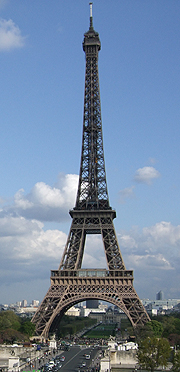
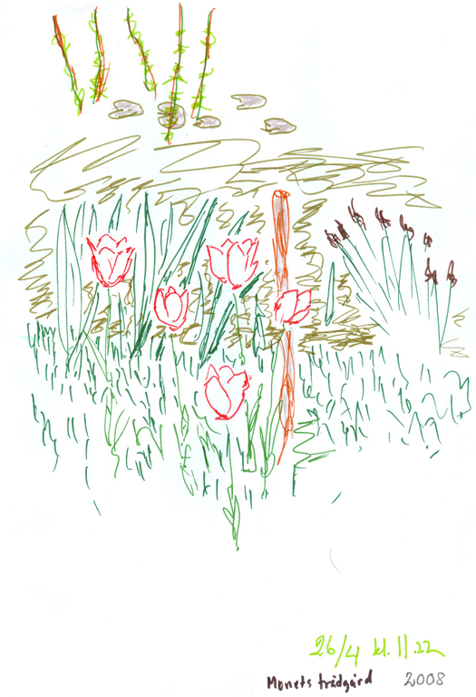
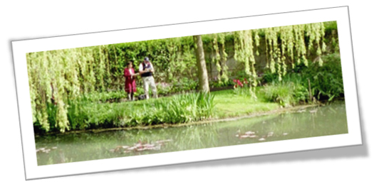

Paris april 2008
Att möta våren i Paris tillsammans med 45 andra glada trevliga människor i en gruppresa med svensktalande guider, i slutet av april, är en upplevelse.
Dag 1 flög vi från Arlanda och kom till Paris på em.
Efter incheckningen på hotellet så blev det en sightseeingvandring i dom närmaste kvarteren.
Premiär för ”creps” en tunnpannkaka i ”strut” med bananer och socker, en trevlig matupplevelse.
Dag 2 inleddes med en bussrundtur för att få se Paris mest kända byggnader
såsom Eiffeltornet, Notre Dame, Lovren och Triumfbågen vilka vi
senare under veckan skulle besöka närmare.
Vi färdades bl a på Champs Elyssees som går
mellan Triumfbågen och Place de la Concorde.
Eftermiddagen var ”fri” så jag och Anita besökte Vaxkabinettet Musée Grevin som fanns i närheten av hotellet.
På kvällen blev det båttur på Seine
med kajplats nära Eiffeltornet.

Dag 3 ner i underjorden för att ta metron till Louvren, fortet som blev museum efter franska revolutionen 1789. Imponerande byggnad med en längd av ca 700 meter mot floden Seine. Här finns kanske världens mest berömda tavla, Mona-Lisa.
Vi fortsätter ovan jord till Montmartrekvarteren, Sacre Coeur-kyrkan och Place du Tertre, konstnärsplatsen med många verksamma konstnärer.
På kvällen efter 1,5 timmars väntan i biljettkö, kl 22.00, så åkte vi upp till toppen av Eiffeltornet och fick en färgsprakande upplevelse
ca 300 meter upp i luften.
Dag 4 besöktes solkungen Ludvig den XVI:s Versailles med slottspark. Här kan nämnas Spegelsalen Galerie des Glaces, som byggdes
mellan åren 1678-1684 och är 73 m lång, 10,5 m bred. Takhöjden är 12,3 meter. Salen har 357 speglar.
1682 flyttade Ludvig den XVI in i Versailles.
Vi var mycket imponerad över 1600-talets formgivare och hantverkare. Här finns också målningar av Alexander Roslin med bla den kända målningen av hans hustru Marie-Suzanne Giroust, Damen med slöjan.
Alexander Roslin, född i Malmö 1718 och avled i Paris 1793, räknas som Sveriges främsta porträtt-målare under 1700-talet.
På kvällen gästade vi Lido de Paris med dess kabaré och showdans.
En fest 
för ögat och örat med duktiga aktörer.
Dag 5 buss mot väster till Impressionisten Claude Monet´s hus och trädgårdar. Dagens guide var Wiveka, konstnärinna, som hade papper och pennor med sig för att ge oss möjligheten att skapa en egen målning från Monets trädgård.
Kjells resultat kan du se här:
Dag 6 Metro till Paris ”gamla stan”, Marais kvarteren och Notre-Dame de Paris en av världens mest kända katedraler. Det är söndag och vårt besök gjordes i slutet av mässan så att vi fick höra utgångsmusiken från den mäktiga orgeln.
Besökte en ”marknadsgata” där parisarna och vi själva kunde inhandla kött, fisk, frukt och grönsaker.
Dag 7 egna strövtåg på förmiddagen och sedan hemresa med ankomst till Arlanda 17.30.
En fantastik trevlig resa till Paris med den lokale reseledaren Leif.
Researrangör: SOBER-resor.

Här står Kjell och skapar.